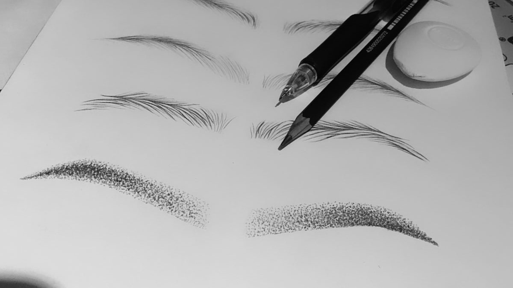

This audio project delves into the fascinating world of permanent makeup, a beauty trend that combines artistry and technique to enhance natural features and simplify daily routines. I created this project to shed light on a topic that often sparks curiosity and intrigue but remains misunderstood by many. Through expert insights and soothing narration, I aim to demystify the process, educate listeners on its benefits and aftercare, and ultimately convey the message that permanent makeup can be a transformative, confidence-boosting solution for those seeking both convenience and enhanced beauty.
Credits: Viviane Candolo